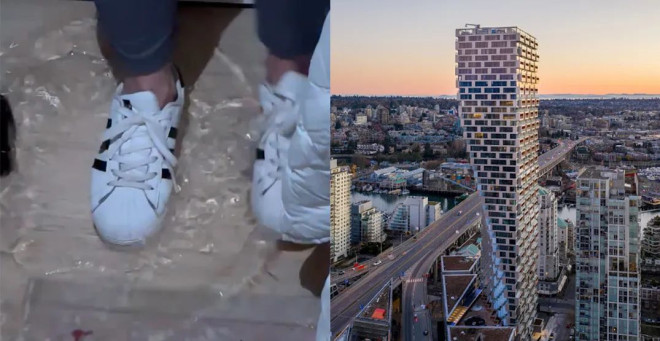
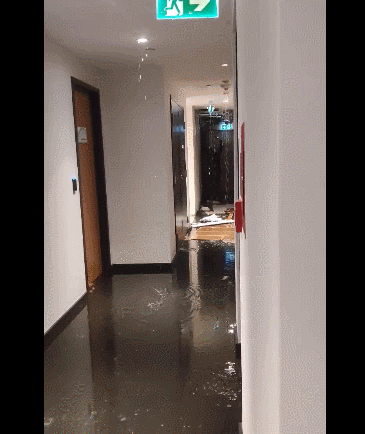
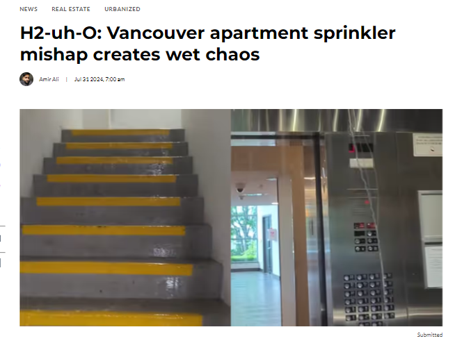
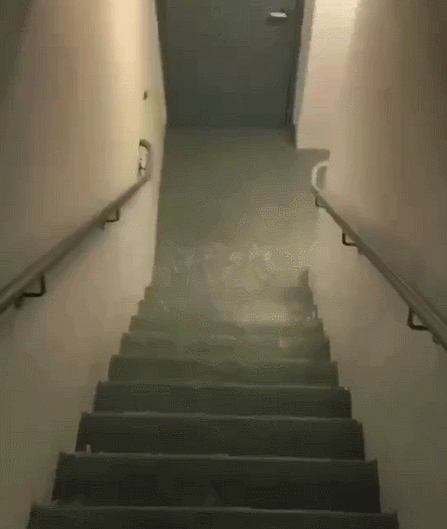
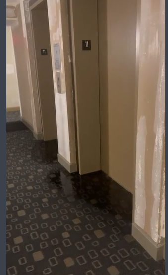
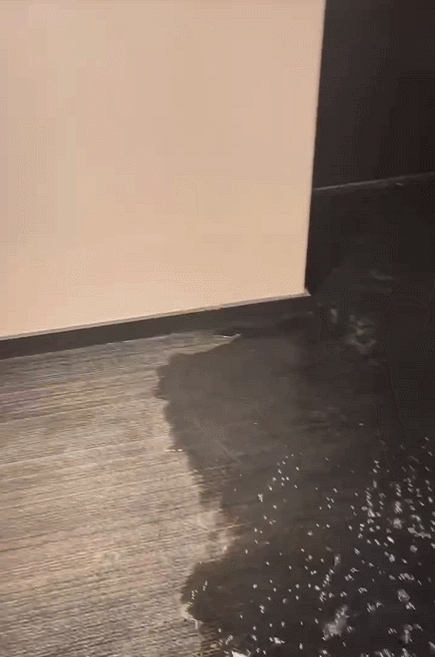

话说，温哥华的楼市在这几年来，就没有不火爆的一天，而楼花作为一种低投入、高杠杆的投资，
也受到了大家的追捧。
随着加拿大房价的新一轮暴涨，
今年3月份，温哥华公寓成交量上涨了128%，
一室一厅公寓均价也已高达$715,800！
不少楼盘甚至出现了几十人疯抢的情况…
可能是因为开发商想快速收钱交房吧，
也可能是觉得自己卖便宜了，各种偷工减料，最近几年很多楼盘都有各种问题，
像Metrotown某大型楼盘的阳台缺块玻璃，
Surrey某公寓不符合防风防震标准，
或者Vancouver House秒变水帘洞…

而且高端公寓秒变水帘洞的情况还一直发生，据Dailyhive报道，最近大温一栋公寓大楼洒水装置故障，导致多层变成“水帘洞”！

DailyHive采访了这栋位于科学世界地区（Science World）的大楼的一名居民，
他们对周一所经历的事情感到震惊。
“当时我正在大厅里，一位住户告诉我听到电梯里有水声，我对此感到很疑惑。”
当电梯门打开时，住户发现水涌入电梯并流下楼梯。
“我对眼前的水量感到震惊，并立即想知道到底发生了什么。”
“真的不知道该说什么，只好安慰自己雨下得没有那么大~”
当然没有一个住户知道到底是什么原因造成的。

根据大楼最后的解释
他们后来得知，
这场是由一台洒水器引起的混乱。
据说，是一名拿着梯子的承包商不小心撞到了洒水喷头，
导致水从 15 层楼上冲下来。
而附近的一些单元可能也受到了水灾的影响。
看看这水量，真的是让人招架不住啊！整个楼梯间都淹了！而这段视频刚好被发到了Reddit上面。

而从电梯里冒出水，有点像《闪灵》里的场景。

电梯里好像真的在下雨，并且电梯明显出现了故障👇
再加上楼梯间成了“水帘洞”，导致上下楼都成问题！出门还得靠雨靴！

而且没过多久，水就从楼梯间蔓延至了走廊，然后还进了这几层的公寓里…

该居民称，大楼里的承包商四处奔波，
似乎不知道该做什么。
“我确信很多居民都是震惊或恐慌。”
值得庆幸的是，
该居民表示，大楼内的社区联系非常紧密，
因此对这一情况的反应非常迅速。
“数十人伸出援手，帮助其他人处理损坏情况，并在楼梯入口附近放置毛巾，以防止水渗入每一层楼。消防员赶到现场，关闭阀门，并尽可能多地排出积水。消防员离开后，我们很快就有八到十辆紧急修复车赶到，他们带来了几十台除湿机。”
这位居民补充说，但将除湿机搬到被水淹没的地板上才具有挑战性。
据居民称，该楼约有 21 至 22 层，
因此由于电梯受损，
一些居民被迫走楼梯进入。
“我们这里有一个很棒的社区，所以很多居民都在帮助那些需要搬运杂货、袋子和手提箱的居民。”
虽然一些大楼居民对承包商感到难过，
但他们也认为承包商应该做出更快的反应或制定应急计划。
“人们需要更多地意识到单个洒水喷头可能造成的灾难性损害，特别是在没有发生火灾的情况下，因为这种问题不仅会提高建筑物、承包商和居民的保险费率，还会提高周边社区的保险费率。”
这位居民说，像温哥华这样的城市，
住房供应如此有限，
根本没有能力容纳数百名流离失所的居民。
“由于生活成本极高，工资却没有跟上增长，我们很多人在可支配收入或应急资金方面几乎没有回旋余地。”
“遇到这样的事情简直就是一团糟。”
好在事情已经很快的在解决，
毕竟原本住得好好的，突然就变水帘洞，
<
p style=”text-align:center;”>是真的心塞…